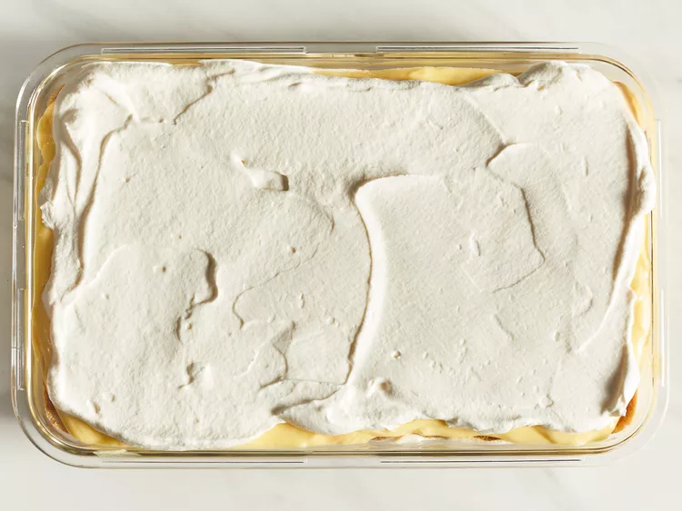

Tiramisu
Prep Time:
30 mins
Cook Time:
5 mins
Additional Time:
5 hrs
Total Time:
5 hrs 35 mins
Servings:
12
Yield:
1 7x11-inch tiramisu
Tiramisu is a classic Italian layered dessert with rum-flavored, coffee-soaked ladyfingers, a creamy mascarpone custard, and whipped cream. This tiramisu recipe is easy to make at home for an impressive no-bake dessert.

Classic tiramisu, with its irresistible coffee flavor and lightly sweetened mascarpone, will never go out of style. This tiramisu recipe is a no-bake dessert that's sure to impress even the pickiest of eaters.
What Is Tiramisu?
Tiramisu is a coffee-flavored dessert that features layers of homemade whipped cream, an egg yolk-enriched mascarpone filling, and coffee-soaked ladyfingers.
Tiramisu Origin
Tiramisu has Italian origins. The famous Italian restaurateur Ado Campeol is credited with its invention in the 1970s. In fact, he was widely known as "the father of tiramisu." The word "tiramisu" translates to "pick-me-up."
Tiramisu Ingredients
Here's what you'll need to make this top-rated tiramisu recipe:
- Egg Yolks: Egg yolks are essential for a thick, rich, velvety smooth filling. Though some traditional recipes use raw eggs, this one doesn't — raw eggs carry the risk of food-borne illness.
- Sugar: White sugar is cooked with egg yolks and combined with mascarpone to create a sweet, creamy filling.
- Milk: Whole milk slightly thins the thick filling, resulting in a spreadable texture.
- Cream: Beat heavy cream until stiff peaks form to create an irresistible whipped cream.
- Vanilla: Vanilla extract adds subtle flavor to the homemade whipped cream.
- Mascarpone: Mascarpone, a creamy Italian cheese with a smooth texture and fresh taste, is a key ingredient in classic tiramisu.
- Coffee: Ladyfingers are soaked in strong, spiked coffee — this is what gives tiramisu its signature flavor.
- Rum: Rum is used to spike the coffee that will be drizzled over the ladyfingers. Some Allrecipes community members say they prefer Kahlua.
- Ladyfingers: Ladyfingers are small sponge cakes that are shaped like thick fingers. If you can't find ladyfingers at your grocery store, you can use pound cake cut into strips.
- Cocoa Powder: Finish off this decadent dessert with a generous dusting of cocoa powder.
How to Make Tiramisu

Ready to make the best tiramisu of your life? You'll find the full recipe below, but here's what you can expect when you make this classic tiramisu recipe:
- Make the Filling: Cook the egg yolks, sugar, and milk until slightly thickened. Let cool slightly, then chill in the fridge for about an hour. When the filling has fully chilled, mix in mascarpone cheese.
- Make the Whipped Cream: Beat heavy cream with vanilla extract until stiff peaks form.
- Soak the Ladyfingers: Combine coffee and rum in a small bowl. Pour mixture over ladyfingers that have been split in half lengthwise.
- Assemble the Tiramisu: Line the bottom of a baking dish with soaked ladyfingers. Spread half of the mascarpone mixture over the ladyfingers, then half of the whipped cream over that. Repeat in the same order. Dust with cocoa powder.
How to Store Tiramisu
Tiramisu is served chilled, so refrigerate the dessert (as well as any leftovers) immediately. Store in an airtight container in the fridge for up to four days.
Ingredients
- 6 large egg yolks
- ¾ cup white sugar
- ⅔ cup milk
-
1 ¼ cups heavy cream
-
½ teaspoon vanilla extract
-
1 pound mascarpone cheese, at room temperature
-
¼ cup strong brewed coffee, at room temperature
-
2 tablespoons rum
-
2 (3 ounce) packages ladyfinger cookies
-
1 tablespoon unsweetened cocoa powder
Directions
Step 1
Whisk together egg yolks and sugar in a medium saucepan until well blended.
Step 2
Whisk in milk and cook over medium heat, stirring constantly, until mixture comes to a boil.
Step 3
Boil gently for 1 minute, then remove from the heat and allow to cool slightly.
Step 4
Cover tightly and chill in the refrigerator for 1 hour.
Step 5
Beat cream and vanilla in a medium bowl with an electric mixer until stiff peaks form.

Step 6
Remove egg yolk mixture from the refrigerator; add mascarpone cheese and whisk until smooth.
Step 7
Combine coffee and rum in a small bowl. Split ladyfingers in half lengthwise and drizzle with the coffee mixture. Arrange 1/2 of the soaked ladyfingers in the bottom of a 7x11-inch dish.

Step 8
Spread 1/2 of the mascarpone mixture over the ladyfingers, then spread 1/2 of the whipped cream over top. Repeat layers once more.

Step 9
Sprinkle cocoa powder over top.
Step 10
Cover and refrigerate until set, 4 to 6 hours.
Step 11
Enjoy!

Nutrition Facts (per serving)
387
Calories
31g
Fat
23g
Carbs
7g
Protein